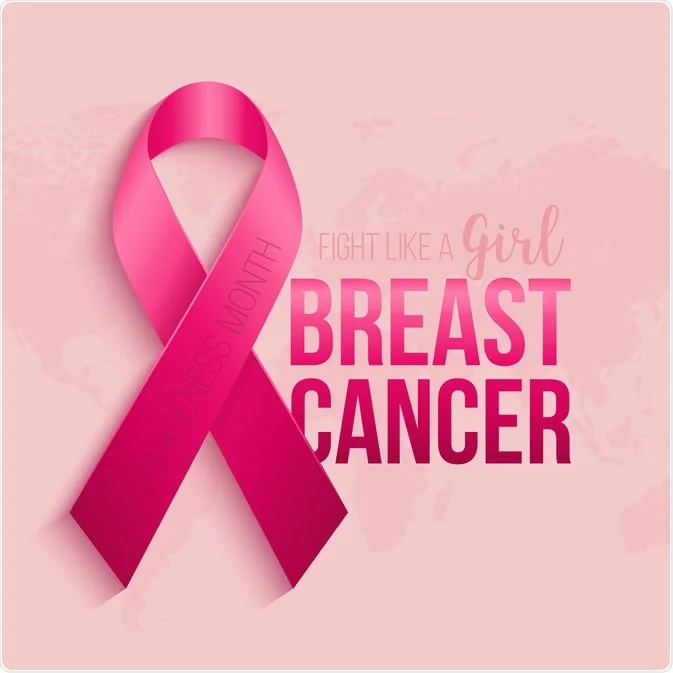
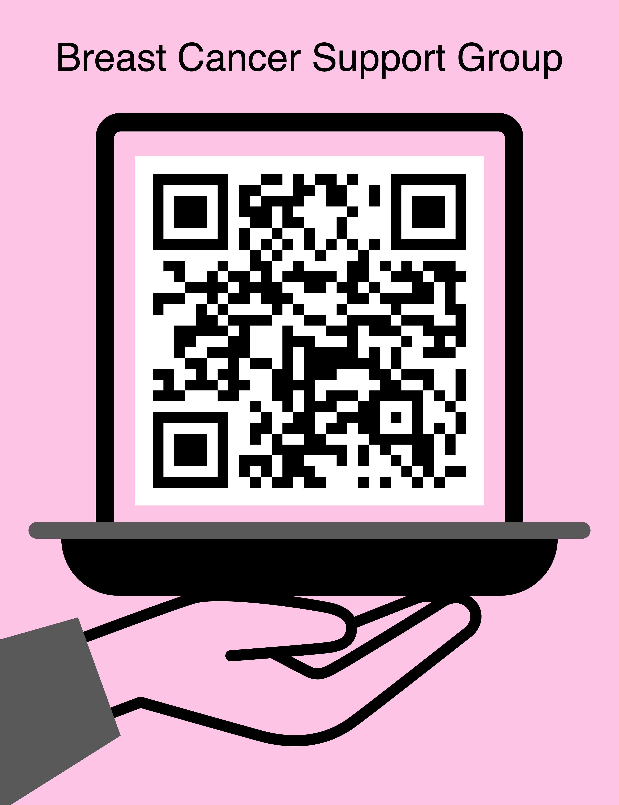

We can get through this!
 | Fighting Breast Cancer | |
|---|---|
| Robin Roberts | "It's about focusing on the fight, not the fright." |
| Melissa Etheridge | "Once I overcame breast cancer, I wasn't afraid of anything anymore." |
| Giuliana Rancic | "Life's better now... My life in many ways is richer." |
| Nancy Reagan | "A woman is like a tea bag; you cannot tell how strong she is until you put her in hot water." |
| Stuart Scott | "You beat cancer by how you live, why you live, and in the manner in which you live." |
| Shannen Doherty | "Ultimately, they're just breasts... I would rather be alive and grow old with my husband." |
| Michael Douglas | "Cancer didn't bring me to my knees, it brought me to my feet." |
| Debbie Wasserman Schultz | "Every woman needs to know the facts. And the fact is, when it comes to breast cancer, every woman is at risk." |
| Emily Ransom | "I had cancer; cancer never had me" |
| Regina Brett | "Cancer is messy and scary. You throw everything at it, but don’t forget to throw love at it... It turns out that might be the best weapon of all." |